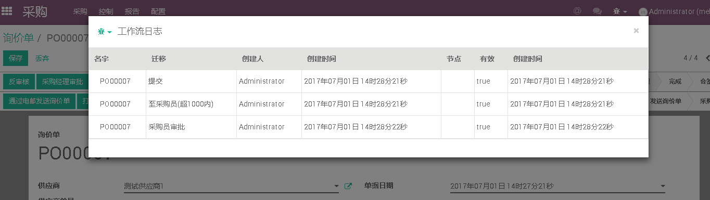

<section class="oe_container">
    <notebook>
        <page string="中文介绍introduction">
            <div class="oe_row oe_spaced">


<section class="oe_container oe_dark">
    <div class="oe_row oe_spaced">
        <h2 class="oe_slogan" style="color:#875A7B;">工作流追踪日志Workflow tracking log</h2>
        <div class="col-md-8 col-md-offset-2 oe_mt32">
            
        </div>
    </div>
</section>

<section class="oe_container oe_dark">
    <div class="oe_row oe_spaced">
        <h3 class="oe_slogan" style="color:#875A7B;">
            <p>If you need any help of Odoo, please contact me</p>
            <p>如有Odoo实施，二开，培训等需求，请联系作者</p>
        </h3>
        <h2 class="oe_slogan " style="color:#875A7B;">Email: alangwansui@qq.com</h2>
        <h4 class="oe_slogan oe_mb32"><a href="tencent://message/?uin=190170444">QQ立刻联系</a></h4>
        <h3 class="oe_slogan " style="color:#875A7B;">淘宝链接 TaoBao link</h3>
    </div>
</section>

<section class="oe_container oe_dark">
    <div class="oe_row oe_spaced">
        <h3 class="oe_slogan" style="color:#875A7B;">
            <p>Look at the author's other modules</p>
            <p>看看作者的其他模块</p>
        </h3>
    </div>
</section>

<section class="oe_container oe_separator">
    </page>
    </notebook>
</section>
